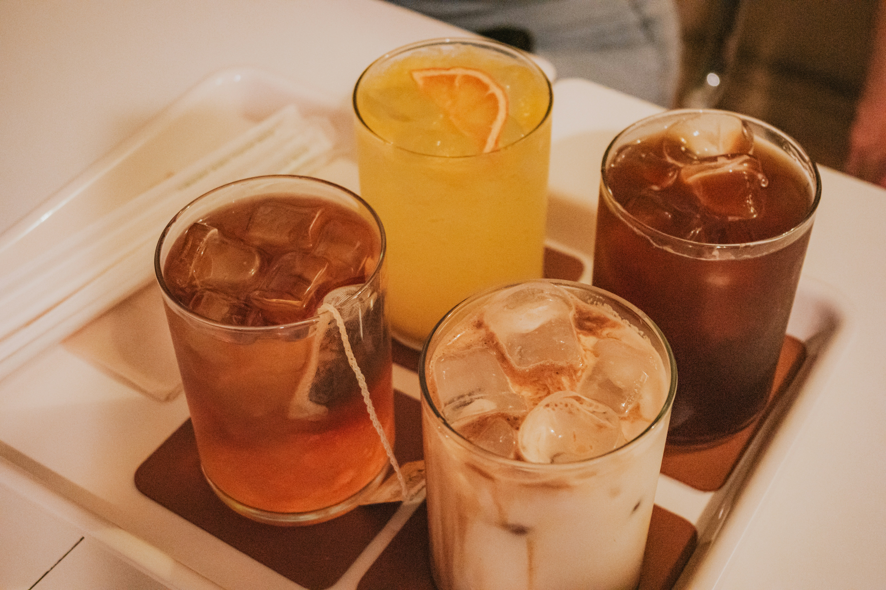

Menu
We serve espresso drinks, brewed coffee, cold beverages, teas, and a rotating selection of café food.
Espresso & Coffee
- Espresso
- Americano
- Cappuccino
- Latte
- Mocha
- Drip Coffee
- Cold Brew
Tea & Other Drinks
- Hot Tea
- Iced Tea
- Chai
- Hot Chocolate
- Seasonal Beverages

Photo by
Seungmin Yoon
on
Unsplash
Café Food
- Breakfast pastries
- Breakfast sandwiches
- Toasts
- Grab-and-go lunch items
- Rotating baked goods
Ready to stop by?
Find a Location